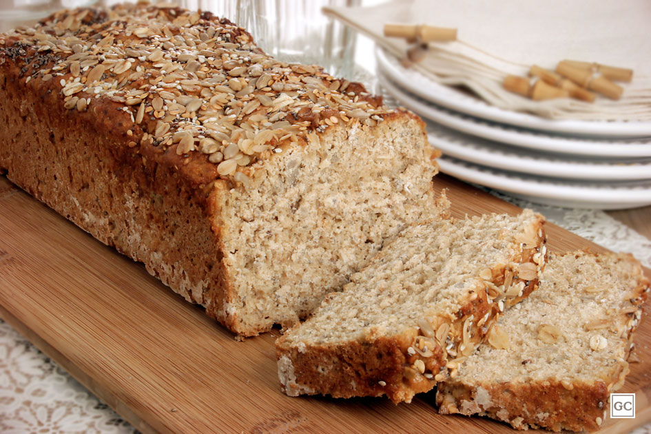

Receitas
PAO INTEGRAL:
500 ml de leite
1/2 xicara de farinha de trigo integral
1/2 xicara de farinha de trigo branca
1/2 xicara de aveia
1 colher de sopa de fermento biologico
1 colher de sopa de sal
2 ovos
Modo de Preparo:
Misture todos os ingredientes e mexa até dar ponto de massa de pão;
Coloque na forma própria para pão;
Asse por 40 minutos.